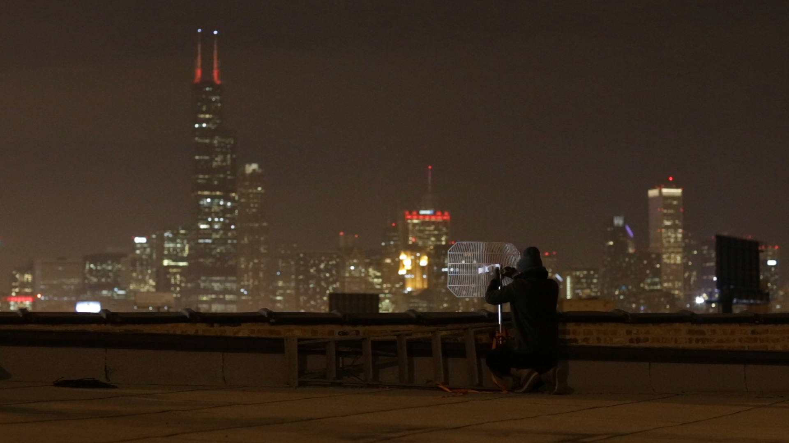

<div class="row">

<div class="col-sm-8 col-sm-offset-2 col-lg-6 col-lg-offset-3">

<h2>LINE OF SIGHT</h2>

Video series screening<br>
Chicago Artists Coalition | BOLT exhibition space<br>
Thursday, March 19, 2015<br>
7:00-8:30 PM<br>
<br>
Free and open to the public.<br>
 
<p>Dark Fiber, an inaugural collaboration by Chicago-based artists Marissa Lee Benedict & David Rueter, is a single-channel video installation on view from March 6-26. Streamed into the gallery over a fiber optic cable that snakes up from the basement studios, the video follows the artists as they labor, through acts practical and imagined, to fabricate the infrastructure of a new, unauthorized high-speed global telecommunications network.</p>

<p>On March 19th, Dark Fiber will go dark, and a video and film series, curated via an open call to artists and filmmakers, will take over the screen.</p>
 
<p>Although open in its curatorial premise, the videos selected for the Line of Sight festival will critically address (1) the method of the video or film’s transmission from author to gallery and (2) the media format and/or playback device by which the video is projected in the gallery.</p>
 
<p>Methods of submitting media for the festival could potentially include: radio link, live stream or anonymous dead drop; delivery via U.S. postal system, bike messenger or in-person transfer.</p>
 
<p>Potential formats or playback devices for the screening could be: a Western Digital media player, a DVD/Bluray disc, a laptop with a wireless internet connection, a TV monitor, an LCD screen or a 16 mm film reel and projector. **The gallery will be equipped with a projector and a media player; if needed, a laptop, TV monitor and/or a DVD/Bluray player can be provided. Other types of media playback device must be provided by the artist.</p>
 
<p>Additional Details:<br>
All videos and films should be no more than 10 minutes in length.
The video or film must be originally produced by the artist or collective submitting.</p>

<p>
Please submit your inquiries, questions or concerns to lineofsightfestival@gmail.com</p>
 


<p>**TO SUBMIT TO LINE OF SIGHT:**</p>
 
 
<p>All submissions will be sent to lineofsightfestival@gmail.com. Your submission should include:</p>
 
<ol>
<li>A link to YouTube, Vimeo, Dropbox or other web-sharing platform where your video or an excerpt of your film can be reviewed. All submitted media should be a maximum of 10 minutes in length. Password-protected films are acceptable, just make sure to also provide the password.</li>

<li>A 250-word or less description of the submitted work, bio/CV(s) and a link to your website(s).</li>

<li>A narrative proposal description that outlines (a) how you wish to transmit your video or film to the gallery and (b) what media format and playback device you would like to use for the festival. </li>
</ol>
<p>**ALL SUBMISSIONS ARE DUE BY MARCH 5 at 12 PM CST.**</p>

</div>
</div>